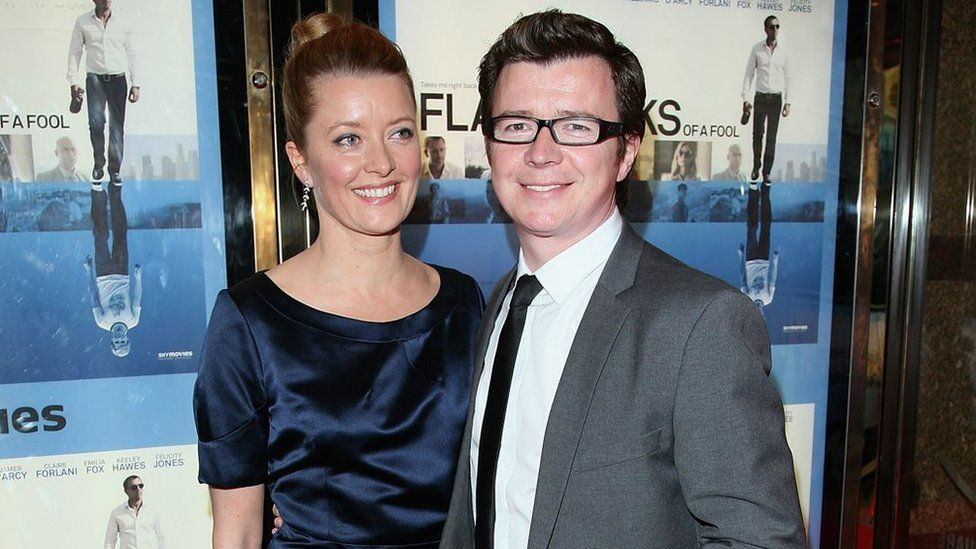

Childhood
Rick Astley grew up in Newton-le-Willows in Lancashire Britain as the 4th kid in his family. At the age of 5 his parents divorced and he lived with his dad. He kept in contact with his mom though because she lived nearby. When he found out the reason for his parents divorce was his father he distanced himself from him. Rick Astley came to love music at the age of 10 years when he joined a local church choir. He played drums in local bands and won a few local award competitions.
Beginning His Career
Rick Astley was a drummer in a local band known as FBI. They were known for performing their own music in pubs and clubs. The band fell apart after the lead singer quit and one of the other members also left. Rick offered to be the lead vocalist and was noticed by a record producer named Pete Waterman. Pete convinced Rick to work at Pete Waterman Limited (PWL) with RCA Records publishing his records. Astley learned about the recording process helping him grow his career later in life.
Initial Success with RCA Records and Pete Waterman Limited
Rick Astley began his music career in 1987 with his first single "When You Gonna." The song was a collaboration with Lisa Carter, and charted 17 in the Netherlands and 20 in Belgium. His first solo was "Never Gonna Give You Up." The song was an instant success, spending 5 weeks at the top of British charts, and was the highest selling single of the year. It topped the charts in 24 other countries as well. Rick released his first album in 1987 called "Whenever You Need Somebody," selling 15.2 million copies worldwide. He performed the song at the 1988 BPI awards in front of 100 million people. It's important to note that he didn't write the song, he only performed it. In 1989 he was nominated for a grammy Award for Best New Artist despite losing to Tracy Chapman. His final release from his debut album was "It Would Take a Strong Strong Man" and the song interestingly wasn't released in Britain because it was designed for a North American audience. To finish off 1989 Rick did his first world tour, going to 15 countries. He got a lot of negative press during his tour and decided to leave RCA Records and PWL, to further his career as a musician.
Furthering His Success
Rick Astley released his 3rd album in 1991 and had features of Elton John, and charted No 9 in the UK and No 31 in the US. The album was different from his previous 2 because it was under the soul genre. He also changed his image, and grew his hair long to look more mature as a musician. He released another album called "Body and Soul" in 1993 but didn't achieve much success since he had decided to retire from the music industry. A few of the singles in the album got some more minor success when compared to his prior stardom. One song became one of the few songs to achieve the BMI 'Million-Air' status.

A Brief Retirement
Throughout 1994-2000 Rick decided his family was more important than his career. Throughout this time he stayed away from the media and didn't release any music. He has said that another factor for this time was because of the business side of music.
Coming Back To Music
Rick Astley eventually came back to music and released the album "Keep It Turned On." This album also wasn't a very big success but the single "Sleeping" was popular in clubs. This album was only released in Continental Europe. He released a compilation album simply named "Greatest Hits." This was his first album in years to get a larger amount of success. It charted No 10 in the UK, and sold over 100,000 copies without any promotion by Rick.
Back On Tour
Rick went on tour again after 14 years without touring and he got a record contract with Sony BMG. He released the album "Portrait" but it wasn't promoted well because Rick and Sony didn't like the final product. Even without promotion it charted No 26 in the UK. In 2008 he was nominated at the MTV Europe Music Awards for the 'Best Act Ever' award. He actually ended up winning the award because of an internet campaign by fans of Rick. Unfortunately he wasn't able to make it to the award ceremony to get it in person. "Never Gonna Give You Up" charted No 73 on the UK charts 21 years after release.
Modern Day
Rick Astley released a single from his album "50" once he turned 50 years old. When Rick actually released the album charted No 1 on the Official UK Album Sales charts. Later on Rick announced his upcoming album "Beautiful Life" along with a tour, and released a single by the same name. The album was released a week before it was supposed to and peaked at No 6 on the UK Albums Chart. Rick released "The Best of Me '' album, which had some reimagined versions of songs, a brand new song, and some of his older songs. "Never Gonna Give You Up" reached 1 billion views on youtube making Rick one of 4 1980s artists to accomplish this. Rick Astley has an upcoming tour with dates from May 10 to July 23.